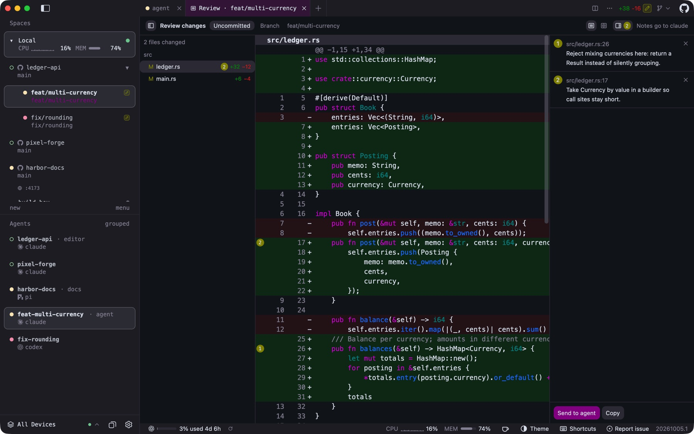
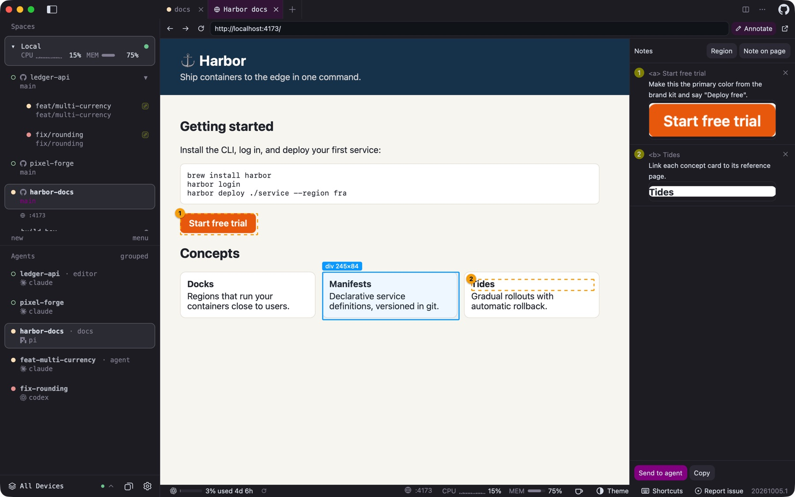
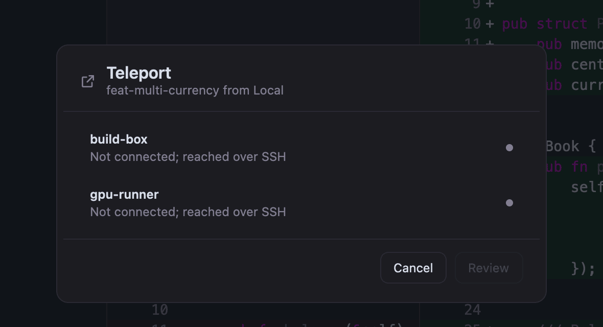
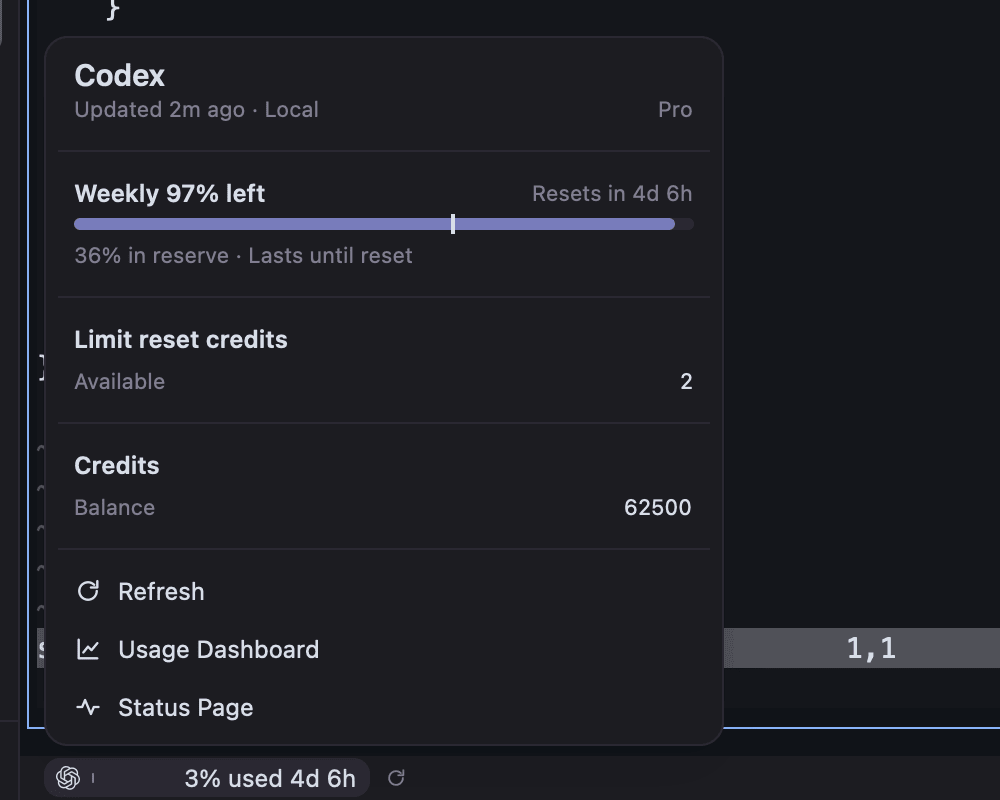
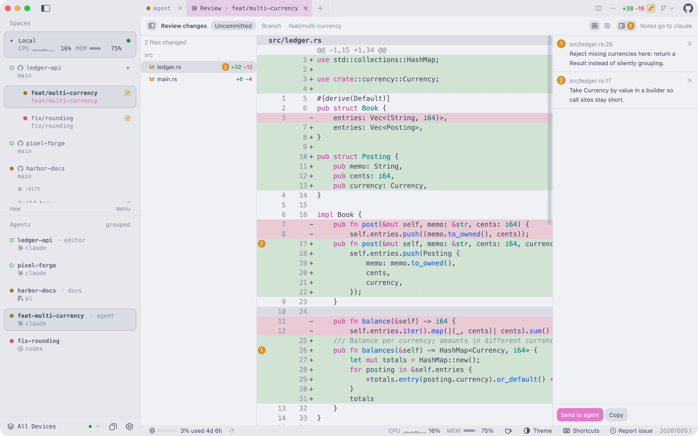

Real screenshot · pre-rename build, Herdr UI branding
01 · Workspaces
Every agent. Every worktree.
Repositories down the side, their worktrees nested beneath, each with its branch, pull request, diff and an agent status dot that comes from the terminal server itself. Close the window and every agent keeps running.
Real screenshot · pre-rename build, Herdr UI branding
02 · Review
Read it. Note it. Ship it.
A pull-request-style diff of what the agent changed. Click any line to leave a note and send it back to the agent. Then commit, push and open the pull request from the title bar. A Git checkpoint lands at every agent turn, so any step can be restored.

Real screenshot · pre-rename build, Herdr UI branding
03 · Browser notes
Point. Don't describe.
Agents open their previews in a tab beside the terminal. Pin notes to elements, text or regions, and they go back to the agent with exactly what you pointed at.
macOS and Windows. Linux opens pages in the system browser.

Real screenshot · pre-rename build, Herdr UI branding
04 · Machines
Your laptop is just one machine.
SSH hosts, WSL, containers and cloud sandboxes sit in the same sidebar. Smart Dispatch starts work where the cores are free. Teleport moves a live worktree and its agent sessions to another machine, and back.
Teleport, Fan-out and Dispatch run from macOS and Linux clients. Some cloud providers are experimental.

Real screenshot · pre-rename build, Herdr UI branding
05 · Usage
Know before you hit the limit.
Plan usage for 85+ AI services, read on the machine where each agent runs. The one closest to its limit sits in the status bar, beside CPU, memory and disk for every host.

Real screenshot · pre-rename build, Herdr UI branding
06 · Yours
Hundreds of themes. Your shortcuts. Your mods.
Light and dark pairs that follow the system, sidebar layouts from roomy to minimal, a shortcuts editor, Luau mods that add panels and commands, and automations that run only after you approve the script.

Real screenshot · pre-rename build, Herdr UI branding
07 · Pocket
Step away. Stay in the loop.
Turn on remote control and your computer serves an app to your phone: chats, questions, notifications. Pairing is approved on both screens and runs over your LAN or Tailscale with its own certificate authority.
Opt-in any phone browser · TestFlight beta iPhone & iPad · Experimental Live Activities, widgets, Watch
Illustration
Needs you
ledger-api · claudeRun the database migration?
Allow onceDeny
fix/rounding · codexFinished · 2 files changed
Sheprd
Illustration
Needs you
ledger-api · claudeRun the database migration?
Allow onceDeny
fix/rounding · codexFinished · 2 files changed
pixel-forge · geminiWorking · 4 min
Real screenshots · pre-rename build, Herdr UI branding
Built like a native app, because it is one.
3desktop platforms, x86_64 & ARM64
26Rust crates
~380klines of production Rust
8,000+tests
Measured with tokei over tracked first-party source at commit 8e03793da, excluding dependencies, docs, the site and assets; tests counted by test attributes. Size is not the point: it is what lets one app do all of the above.
Everything, with honest labels.
Every feature with its status today. Platform limits are listed under each one.
The feature directory needs JavaScript. The full list is in FEATURE-INVENTORY.md.
Get Sheprd.
Releases come from github.com/sheprd-labs/sheprd. Homebrew keeps its penso/tap tap and herdr-gpui token, so existing installs keep upgrading.
brew install penso/tap/herdr-gpui
macOS 14.2 or newer, universal app. Current channel.
curl -fsSL https://sheprd.org/install.sh | sh
x86_64 and ARM64; APT, DNF or pacman. Current channel.
irm https://sheprd.org/install.ps1 | iex
x86_64 and ARM64, per-user, no admin rights. Current channel.
nix run github:sheprd-labs/sheprd
Builds from source on x86_64 and ARM64 Linux. Current channel.
Any phone: turn on remote control in Settings and scan the QR code (opt-in). iPhone & iPad: native app in TestFlight beta for testers; no public link yet.